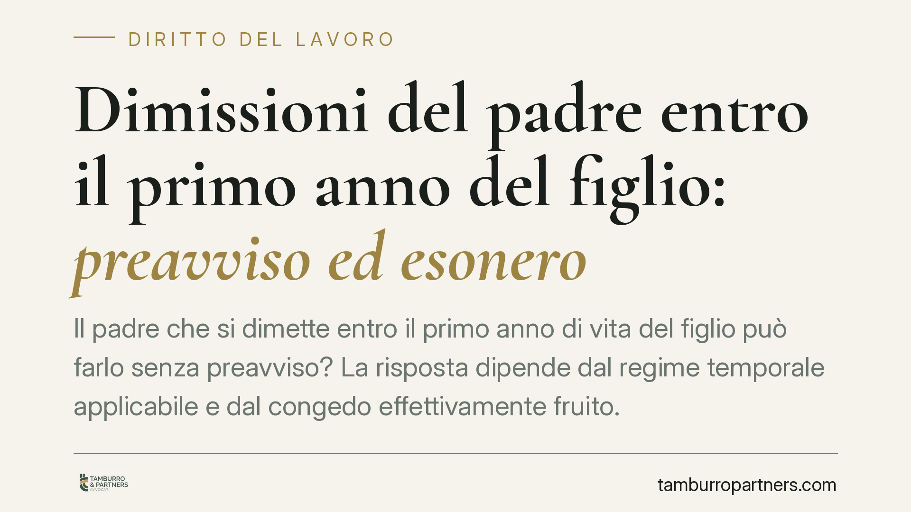

Dimissioni del padre entro il primo anno del figlio: preavviso ed esonero
Il padre che si dimette entro il primo anno di vita del figlio può farlo senza preavviso? La risposta dipende dal regime temporale applicabile e dal congedo effettivamente fruito. La questione è tutt'altro che teorica: incide su convalida, indennità sostitutiva e validità stessa delle dimissioni. Ricostruiamo il quadro normativo distinguendo l'assetto anteriore e quello successivo alla riforma del 2022.

Il problema pratico
Un lavoratore padre, nel primo anno di vita del figlio, decide di dimettersi. Due domande emergono subito: le dimissioni sono soggette a convalida? E il lavoratore è esonerato dall'obbligo di preavviso, con conseguente irrilevanza dell'indennità sostitutiva?
Sono due piani distinti, spesso confusi. La convalida attiene alla validità delle dimissioni; l'esonero dal preavviso attiene agli effetti economici della cessazione. Vanno tenuti separati.
Inquadramento normativo
La norma di riferimento è l'art. 55 del D.Lgs. 151/2001 (Testo Unico maternità e paternità). Il comma 1 stabilisce che le dimissioni presentate durante il periodo per cui è previsto il divieto di licenziamento devono essere convalidate dal servizio ispettivo del Ministero del lavoro (oggi Ispettorato territoriale): si tratta di una condizione di efficacia a tutela della genuinità della scelta.
Lo stesso art. 55 prevede, per il lavoratore o la lavoratrice che si dimette in tale periodo, il diritto alle indennità previste per il licenziamento e l'esonero dall'obbligo di preavviso. Il punto delicato riguarda l'ambito soggettivo: la portata di questa tutela in capo al padre è stata storicamente legata al tipo di congedo fruito e al periodo di protezione attivato.
La genesi del congedo di paternità
Per comprendere le differenze di regime occorre ricostruire l'evoluzione normativa.
Il congedo obbligatorio di paternità nasce in via sperimentale con la L. 92/2012 (art. 4, comma 24): pochi giorni di astensione obbligatoria, con finalità di sostegno alla genitorialità, ma con un perimetro di tutela limitato.
La misura è stata via via rafforzata e infine resa strutturale dal D.Lgs. 105/2022, che ha introdotto nel Testo Unico l'art. 27-bis del D.Lgs. 151/2001: il congedo di paternità obbligatorio è oggi un diritto autonomo e consolidato (dieci giorni lavorativi), affiancato dal congedo di paternità alternativo già previsto dall'art. 28 per i casi di sostituzione della madre.
Questa stratificazione spiega perché il regime applicabile dipende dalla data di cessazione del rapporto: è il criterio dirimente per individuare la disciplina vigente.
Il nodo interpretativo sull'esonero dal preavviso
Secondo un orientamento giurisprudenziale, nel regime anteriore alla riforma del 2022 l'esonero dal preavviso in caso di dimissioni del padre entro il primo anno del figlio non operava in modo automatico per chi avesse fruito del solo congedo obbligatorio introdotto in via sperimentale, a differenza del congedo alternativo ex art. 28, idoneo ad attivare il periodo di protezione più ampio.
Segnaliamo che si tratta di una lettura delicata e non pacifica: l'art. 55 àncora la tutela al periodo di divieto di licenziamento, non direttamente alla tipologia di congedo. Chi intenda far valere l'esonero deve quindi verificare, caso per caso, periodo di protezione applicabile e fonte normativa vigente alla data delle dimissioni, evitando di dare per scontato l'automatismo.
Cosa cambia con il nuovo assetto
Dopo il D.Lgs. 105/2022 le tutele per il padre sono state ampliate e rese più coerenti. Resta fermo, in ogni caso, l'obbligo di convalida delle dimissioni presentate nel primo anno di vita del figlio ex art. 55: è un presidio che prescinde dal tema del preavviso e dal tipo di congedo.
Cosa fare in concreto
Per il lavoratore padre:
- Verifica la data di cessazione del rapporto per individuare il regime normativo applicabile (anteriore o posteriore al D.Lgs. 105/2022).
- Ricostruisci quale congedo hai effettivamente fruito (obbligatorio ex art. 27-bis o alternativo ex art. 28) e il periodo di protezione collegato.
- Prima di rinunciare al preavviso, accerta l'effettiva operatività dell'esonero: non darlo per automatico.
- Presenta le dimissioni nelle forme di legge e completa la convalida presso l'Ispettorato territoriale, condizione di efficacia dell'atto.
Per il datore di lavoro:
- Non dare esecuzione alle dimissioni prima della convalida ex art. 55 D.Lgs. 151/2001.
- Valuta la posizione sul preavviso alla luce del regime temporale, documentando la verifica svolta.
Consigliamo, in entrambi i casi, un'analisi preventiva della posizione individuale prima di formalizzare la cessazione.
Disclaimer
Contributo informativo a cura di Tamburro & Partners Avvocati - Avv. Giuseppe Tamburro. Non costituisce parere legale.
Ogni storia di lavoro ha i suoi tempi.
Se gestisci HR e vuoi un confronto su contenzioso, ispezioni o licenziamenti, scrivi allo studio. Ti rispondiamo entro un giorno lavorativo.